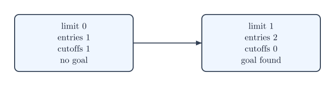
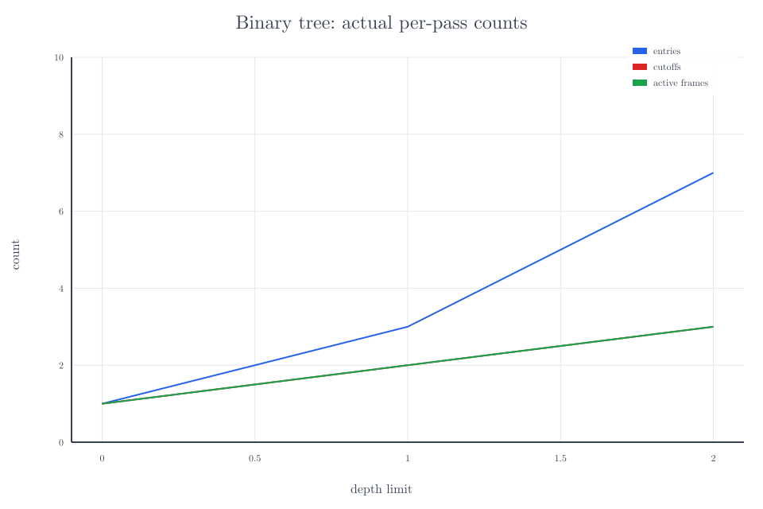
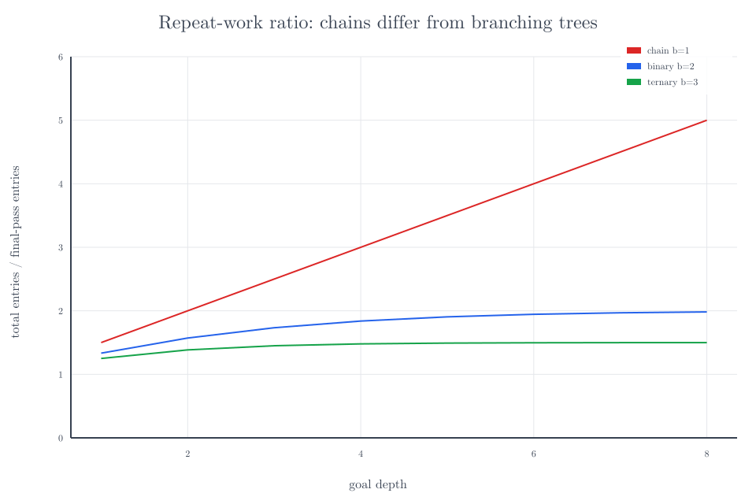
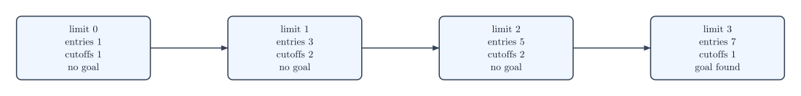

Iterative Deepening DFS: Shallowest Paths and Repeated Work
Abstract
Find a path with the fewest edges in a directed unweighted graph without keeping a breadth-first frontier. Iterative deepening repeats depth-first search with limits zero, one and so on, stopping at the first goal. We preserve the original two-vertex example, expose actual visits and cutoffs, derive the repeat-work formula for complete trees and show why chain overhead is different. The kernel now uses explicit heap frames and stops safely at the finite simple-path bound, including when the requested depth is SIZE_MAX. Its stored graph and membership array are accounted for separately from its active path.
Start with the original edge
The original example has vertices zero and one, the directed edge zero to one,
source zero, goal one and maximum depth one. Its earlier program returned only
an exit status. The same call still succeeds; now we print the actual path and
counter. At limit zero the start is entered and cut off. At limit one the start
is entered again and the goal is entered. The historical expanded total is
therefore three, even though the graph has only two distinct vertices and only
one adjacency entry was examined. A goal is checked before the cutoff rule.
#include <dm/dm.hpp>
int main() {
std::filesystem::create_directories("build");
const auto original =
dm::algorithms::iterative_deepening_dfs(2, {{0, 1}}, 0, 1, 1);
const auto h =
dm::algorithms::iterative_deepening_dfs_trace(2, {{0, 1}}, 0, 1, 1);
std::print("Original path {}, found {}, cumulative entries {}.\n",
original.path, original.found, original.expanded);
std::print("| limit | actual entries | examined arcs | cutoffs | maximum stack | found |\n| ---: | ---: " "| ---: | ---: | ---: | --- |\n");
for (const auto &p : h.run.passes)
std::print("| {} | {} | {} | {} | {} | {} |\n", p.limit, p.entered,
p.edges_examined, p.cutoffs, p.maximum_stack, p.found);
dm::algorithms::deepening_pass_diagram(h.run).save_svg(
"build/iddfs_tiny.svg");
}Original path [0, 1], found true, cumulative entries 3.
| limit | actual entries | examined arcs | cutoffs | maximum stack | found |
|---|---|---|---|---|---|
| 0 | 1 | 0 | 1 | 1 | false |
| 1 | 2 | 1 | 0 | 2 | true |

Why the first successful depth is shortest
A depth-limited pass explores directed simple-path prefixes in original outgoing arc order. A membership flag marks only the current path, and is cleared when an activation is popped. An examined arc to an active vertex is skipped because it would close a cycle. Parallel arcs remain separate adjacency entries and can repeat the same prefix. There is no global visited set across different paths.
Any reachable goal has a simple path: remove a repeated-vertex cycle from a walk until no vertex repeats. A simple path in an n-vertex graph has at most n−1 edges. A complete depth-limited pass reaches every simple prefix within its limit unless a goal terminates it early. Thus the first successful limit equals the minimum edge depth. Among equal-depth solutions, input arc order determines the first path. This is not a minimum-weight guarantee.
The safe effective limit is \(D=\min(max\_depth,n-1)\). After a failed pass at D, the loop stops before incrementing it; SIZE_MAX cannot wrap the limit loop. Unsuccessful requests above n−1 intentionally omit the old redundant passes, so their historical visit total changes. For requests at or below n−1, the ordinary path, input-order tie choices and cumulative entry counts are preserved. A failed smaller budget does not establish that the goal is unreachable.
Inspect actual visits, not repeated-prefix solves
For a complete binary tree of depth two, the last leaf is visited last in each relevant depth-first pass. The final pass enters all seven vertices, while earlier passes enter one and three. The chronological enter records below come from the same execution that produced the path. Cutoff vertices count as entries even though their outgoing arcs are not scanned. Success leaves the final path active; there are no invented leave events after the goal.
#include <dm/dm.hpp>
int main() {
std::filesystem::create_directories("build");
const auto t = dm::algorithms::deepening_tree(2, 2);
const auto h =
dm::algorithms::iterative_deepening_dfs_trace(t.n, t.edges, 0, t.goal,
t.depth);
std::print("| actual pass limit | entered vertex | path depth |\n| ---: | ---: | ---: |\n");
for (const auto &e : h.events)
if (e.kind == dm::algorithms::DeepeningEventKind::enter)
std::print("| {} | {} | {} |\n", e.limit, e.vertex, e.depth);
std::print("Final path {}; cumulative entries {}; final-pass entries {}.\n",
h.run.result.path, h.run.result.expanded,
h.run.passes.back().entered);
std::vector<double> limits, entries, cutoffs, stack;
for (const auto &q : h.run.passes) {
limits.push_back(q.limit);
entries.push_back(q.entered);
cutoffs.push_back(q.cutoffs);
stack.push_back(q.maximum_stack);
}
auto p = dm::graphics::RPlot::create();
p.line(limits, entries, "entries", {37, 99, 235}, 2).line(limits, cutoffs,
"cutoffs",
{220, 38, 38}, 2).line(limits, stack, "active frames", {22, 163, 74}, 2).title("Binary tree: actual per-pass counts").x_label("depth limit").y_label("count").y_limits(0, 10).save_svg("build/iddfs_tree.svg");
}| actual pass limit | entered vertex | path depth |
|---|---|---|
| 0 | 0 | 0 |
| 1 | 0 | 0 |
| 1 | 1 | 1 |
| 1 | 2 | 1 |
| 2 | 0 | 0 |
| 2 | 1 | 1 |
| 2 | 3 | 2 |
| 2 | 4 | 2 |
| 2 | 2 | 1 |
| 2 | 5 | 2 |
| 2 | 6 | 2 |
Final path [0, 2, 6]; cumulative entries 11; final-pass entries 7.

Derive repeat-work overhead and its assumptions
In a complete b-ary tree with a last-visited goal at depth d, the final pass enters \(S_d=\sum_{k=0}^d b^k\) vertices. A level-k vertex is entered in passes k through d, exactly d−k+1 times. Summing by level gives
For b>1, exchanging the sums or differentiating the geometric series yields
For b=1 the tree is a chain: \(S_d=d+1\), but \(V_d=(d+1)(d+2)/2\), so the ratio is \((d+2)/2\) and grows without bound. These formulas count entered prefixes, not CPU time, adjacency examinations or all possible graphs. In a graph, many simple prefixes can end at the same vertex; in a multigraph, parallel arcs can repeat even those prefixes. A constant overhead claim needs the exponential-tree assumptions, not merely a finite stored graph.
#include <dm/dm.hpp>
int main() {
std::filesystem::create_directories("build");
std::vector<double> depths, chain, binary, ternary;
std::print("| depth | branching | complete vertices | final-pass entries | total entries | entry ratio " "|\n| ---: | ---: | ---: | ---: | ---: | ---: |\n");
for (std::size_t d = 1; d <= 8; ++d) {
depths.push_back(d);
for (std::size_t b : {1, 2, 3}) {
const auto t = dm::algorithms::deepening_tree(b, d);
const auto r =
dm::algorithms::iterative_deepening_dfs_run(t.n, t.edges, 0,
t.goal, t.depth);
const double ratio =
double(r.result.expanded) / r.passes.back().entered;
std::print("| {} | {} | {} | {} | {} | {:.8g} |\n", d, b, t.n,
r.passes.back().entered, r.result.expanded, ratio);
(b == 1 ? chain : b == 2 ? binary : ternary).push_back(ratio);
}
}
auto p = dm::graphics::RPlot::create();
p.line(depths, chain, "chain b=1", {220, 38, 38}, 2).line(depths, binary,
"binary b=2",
{37, 99, 235}, 2).line(depths, ternary, "ternary b=3", {22, 163, 74}, 2).title("Repeat-work ratio: chains differ from branching trees").x_label("goal depth").y_label("total entries / final-pass entries").y_limits(0, 6).save_svg("build/iddfs_overhead.svg");
}| depth | branching | complete vertices | final-pass entries | total entries | entry ratio |
|---|---|---|---|---|---|
| 1 | 1 | 2 | 2 | 3 | 1.5 |
| 1 | 2 | 3 | 3 | 4 | 1.3333333 |
| 1 | 3 | 4 | 4 | 5 | 1.25 |
| 2 | 1 | 3 | 3 | 6 | 2 |
| 2 | 2 | 7 | 7 | 11 | 1.5714286 |
| 2 | 3 | 13 | 13 | 18 | 1.3846154 |
| 3 | 1 | 4 | 4 | 10 | 2.5 |
| 3 | 2 | 15 | 15 | 26 | 1.7333333 |
| 3 | 3 | 40 | 40 | 58 | 1.45 |
| 4 | 1 | 5 | 5 | 15 | 3 |
| 4 | 2 | 31 | 31 | 57 | 1.8387097 |
| 4 | 3 | 121 | 121 | 179 | 1.4793388 |
| 5 | 1 | 6 | 6 | 21 | 3.5 |
| 5 | 2 | 63 | 63 | 120 | 1.9047619 |
| 5 | 3 | 364 | 364 | 543 | 1.4917582 |
| 6 | 1 | 7 | 7 | 28 | 4 |
| 6 | 2 | 127 | 127 | 247 | 1.9448819 |
| 6 | 3 | 1093 | 1093 | 1636 | 1.4967978 |
| 7 | 1 | 8 | 8 | 36 | 4.5 |
| 7 | 2 | 255 | 255 | 502 | 1.9686275 |
| 7 | 3 | 3280 | 3280 | 4916 | 1.4987805 |
| 8 | 1 | 9 | 9 | 45 | 5 |
| 8 | 2 | 511 | 511 | 1013 | 1.9823875 |
| 8 | 3 | 9841 | 9841 | 14757 | 1.4995427 |

Path-local cycle exclusion, budgets and real storage
The next graph has arcs 0→1→2→3 and 0→3→4→5, with goal five. In the limit-three pass, vertex three is first reached at the cutoff through 0,1,2,3. It must then be allowed again through the shorter prefix 0,3, continuing to 4,5. A single pass-wide visited flag would incorrectly prune this valid depth-three solution. The actual trace enters vertex three twice in that pass.
The explicit stack contains at most D+1 frames, each retaining a vertex, next adjacency position and incoming original edge id. The implementation also stores O(n+E) adjacency, an O(n) membership array, O(D+1) pass summaries and the owned answer. The original unqualified O(d) space claim therefore describes only the active path, not this stored-graph implementation's total memory. Optional trace input copies/events add storage proportional to what is retained.
Complete terminal and original endpoint validation precedes caps/allocation, including unreachable components and start-equals-goal calls. New run/trace policies default to one million complete vertices, original edges and retained scalar events each; zero disables the respective optional cap. Loops and parallel arcs count toward the original edge cap. Event admission is checked before each append; failure returns no partial trace. This cap excludes pass summaries, input copies, adjacency, membership/frames, counters, scalar metadata, capacity and byte/peak RAM. Untraced calls ignore the event cap; the legacy entry point disables optional caps. All returned paths, arcs and events own their values.
#include <dm/dm.hpp>
int main() {
std::filesystem::create_directories("build");
const std::vector<std::pair<std::size_t, std::size_t>> edges{{0, 1}, {1, 2},
{2, 3}, {0, 3},
{3, 4}, {4, 5}};
const auto h =
dm::algorithms::iterative_deepening_dfs_trace(6, edges, 0, 5, 3);
std::size_t repeated = 0;
for (const auto &e : h.events)
if (e.kind == dm::algorithms::DeepeningEventKind::enter &&
e.limit == 3 && e.vertex == 3)
++repeated;
const auto bounded =
dm::algorithms::iterative_deepening_dfs_run(3, {{0, 1}, {1, 0}}, 0, 2,
std::numeric_limits<
std::size_t>::max());
std::print("| control | observed |\n| --- | --- |\n| depth-three path | {} |\n| vertex-three entries at " "limit three | {} |\n| SIZE_MAX request effective depth | {} |\n| failed bounded passes | {} " "|\n| exact event admission | {} |\n",
h.run.result.path, repeated, bounded.effective_max_depth,
bounded.passes.size(), h.events.size());
(void) dm::algorithms::iterative_deepening_dfs_trace(6, edges, 0, 5, 3,
{6, 6, h.events.size()});
try {
(void) dm::algorithms::iterative_deepening_dfs_trace(
6, edges, 0, 5, 3, {6, 6, h.events.size() - 1});
throw std::runtime_error("event cap accepted");
} catch (const std::length_error &) {
std::print("| one-short complete event cap | rejected |\n");
}
try {
(void) dm::algorithms::iterative_deepening_dfs(3, {{2, 3}}, 0, 0, 0);
throw std::runtime_error("unused invalid arc accepted");
} catch (const std::invalid_argument &) {
std::print("| invalid unused endpoint despite start=goal | rejected |\n");
}
dm::algorithms::deepening_pass_diagram(h.run).save_svg(
"build/iddfs_controls.svg");
}| control | observed |
|---|---|
| depth-three path | [0, 3, 4, 5] |
| vertex-three entries at limit three | 2 |
| SIZE_MAX request effective depth | 2 |
| failed bounded passes | 3 |
| exact event admission | 55 |
| one-short complete event cap | rejected |
| invalid unused endpoint despite start=goal | rejected |

What the checks establish
Native sanitizer tests compare all 4096 four-vertex graphs without self-loops at every source/goal pair with the old recursive-order reference and an independent BFS shortest-depth oracle. They also check all 512 three-vertex loop graphs, chronological active paths, every examined original edge id, cycle flags and all selected pass counts, plus explicit parallel arcs and path-local revisits. A 2001-vertex chain completes with an explicit 2001-frame stack. Exact/one-short admission, ownership, invalid unused endpoints and safe SIZE_MAX depth controls are checked. Complete unary/binary/ternary tree controls match the entry formula for depths zero through seven. All six original search-more tests pass too. Frozen comparisons preserve 264144 legacy path/count/found results at depths within n−1, including 2000 ordered loop/parallel-arc controls. A separate Python recursive oracle matches 1027 cases, 2427 actual passes and 15859 scalar events exactly. Fresh checks cover all 62 definitions, 12 compiled public examples and four representative clangd hovers.
The examples establish minimum edge depth and actual repeat-work behavior for this finite directed search. They do not establish an optimal weighted path, constant overhead on arbitrary graphs, total O(d) memory, or a runtime crossover against BFS. No unrelated dataset is needed for these graph-mechanism controls.
The primary source is [Richard E. Korf (1985), Depth-first iterative-deepening: An optimal admissible tree search](https://doi.org/10.1016/0004-3702(85)90084-0), Artificial Intelligence 27(1), 97–109. Its exponential-tree setting is essential to the constant-factor claim. This implementation is the unweighted directed finite-graph variant with current-path cycle exclusion, explicit frames and the simple-path bound; it is not heuristic IDA*. The original repeat-level proof on page 101 was checked. Counts here include the root and limit-zero pass, and the plotted ratio divides by an entire final pass; these conventions differ from normalizing asymptotic work by only the deepest level.